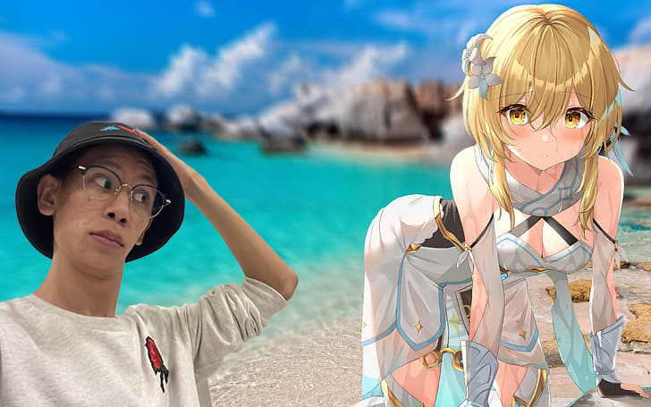
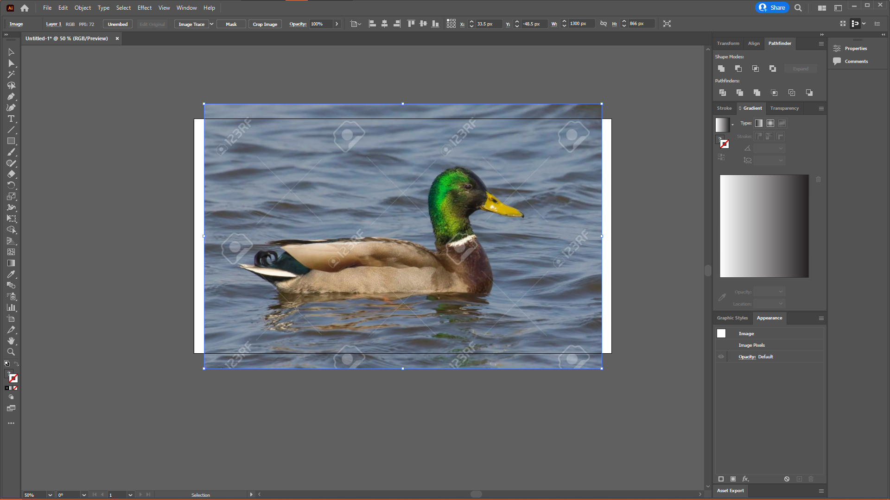
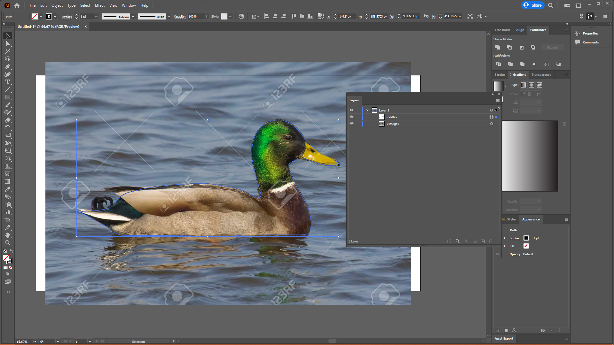
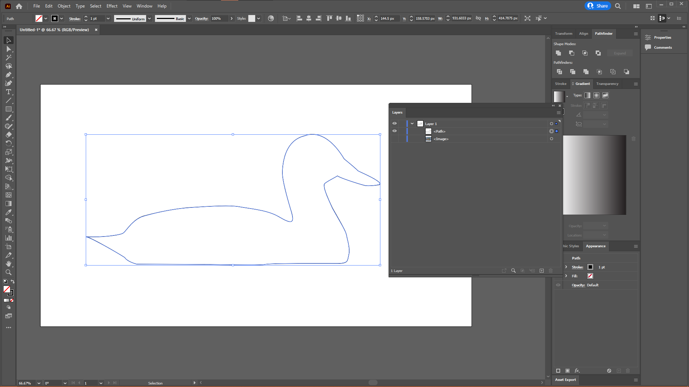
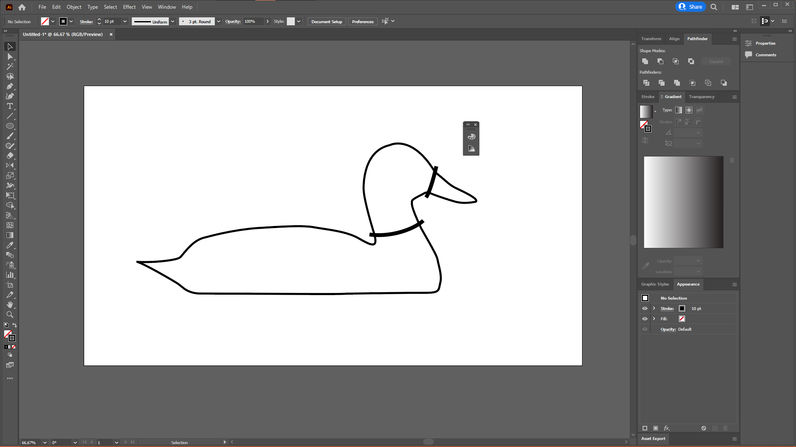
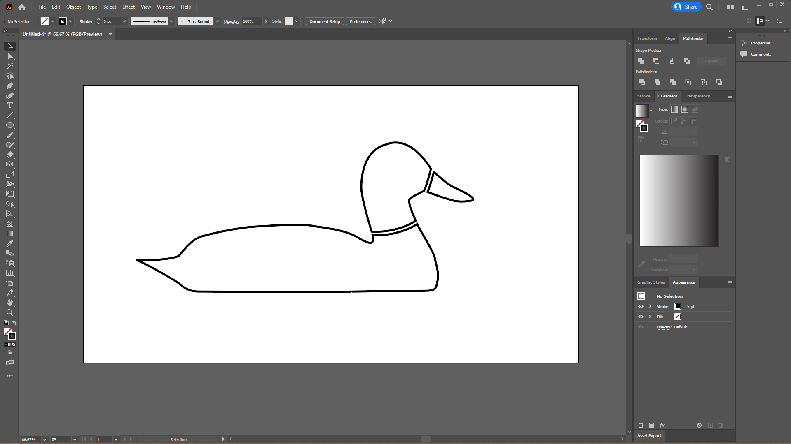
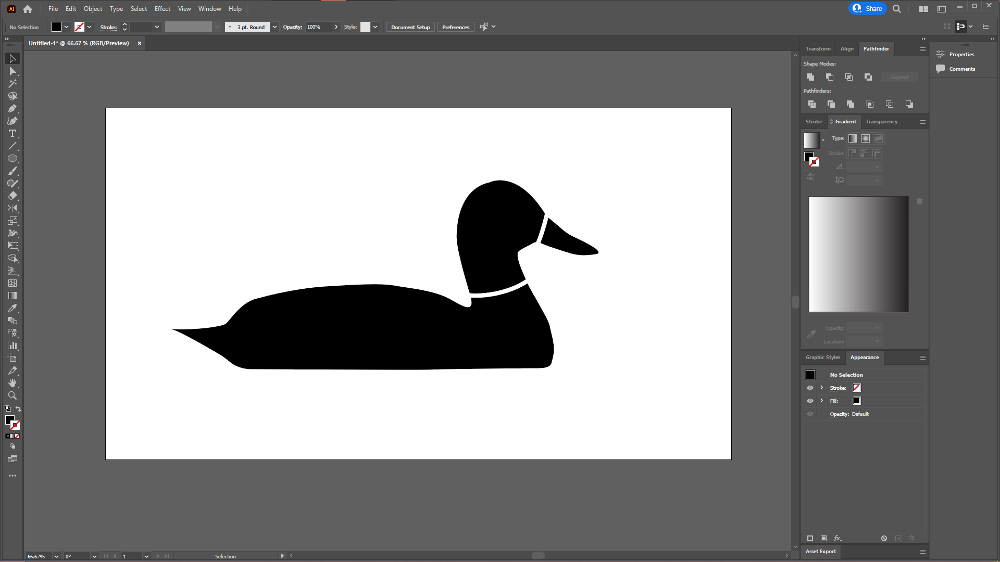
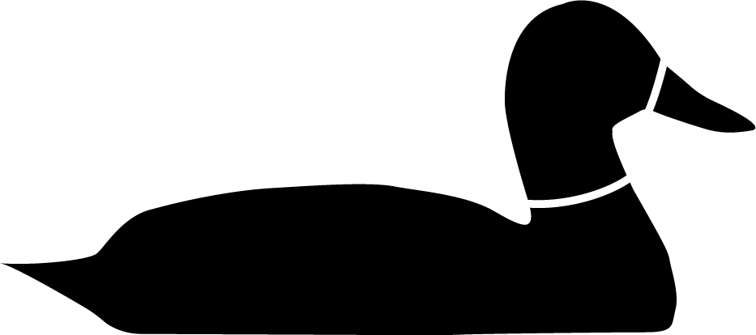

Computer Graphics
Contents
What is Computer Graphics
Computer graphics (CG) is images and graphics generated using the aid of a computer. CG has many uses such as poster, logos, drawing and games. There are 2 main types of CG that is used. The first being raster and the second being vector. Both types of graphics have their own usages and require different software to produce.
Raster vs Vector
Does raster and vector graphics really matter? What are their pros and cons? Images are images, why do you think so much? These are some questions that you might have right now. In this section, I would introduce what raster and vector images are, what are their similarities and what are their differences.
The main difference between raster and vector images is in how they store the data of the image. In a raster image, each individual pixel of an image is saved. Vector images on the other hand uses equations to store the data of the images. What makes them so different you might ask? Since raster images save the pixel, the amount of data in the file is fixed. If you zoom in too much or change the file resolution, you would end up seeing the individual pixels of the image. On the other hand, since the data of vector graphics are stored in equations, they can be zoomed in as much as you want without losing any pixelation.
Does that mean that vector is superior to raster? No. Although vector images can be scaled infinitely, they are harder to manipulate and are not easily readable but all devices. Raster images are better at capturing data, for example through a camera or a screenshot, while vector images are better when creating digital works that has to be upscaled and downscaled on the regular.
Raster Graphics
For raster graphics, I will be using photoshop to edit the images. For this image, I will be removing the background and replacing it with another image.
Step 1
Load your image into the photoshop or your preferred raster image editing software.

Step 2
Use the polygonal selection tool to go around the outline of your subject. Take your time with this. The slower you go, the better the outcome will be.

Step 3
Once you have selected the image, use Shift + Ctrl + I to invert the selection. Delete the background and you'll have an image without a background! Don't forget to save! When you are done, use Ctrl + A to select your image without the background, and Ctrl + C to copy it.


Step 4
Now open your second image, the one with the background.

Step 5
Ctrl + V to paste your first image. Position it as you would like and you have successfully changed then background of your image!

Final Product
Here is my final product. Feel free to share your pictures online or with your friends and family.
Vector Graphics
For vector images, I will be going through how to create an icon from a reference image. However the skills learnt can be applied to create other vector images too.
Step 1
Load your reference image into your vector image editor of choice. I will be using Adobe Illustrator.
Step 2
Next, use the pen tool to create the outline of the shape.
Step 3
Hide the reference image by clicking the eye icon beside it on the layers window. If the layers is not open, you can open it by pressing F7. This way you can better see the line you are drawing. You can also increase the line thickness to make it easier to read its shape.
Step 4
Now, use the pen tool again to draw some of the details of the animal. For my duck, I will be adding the neck separation and beak. Ensure that the lines cut through your original outline
Step 5
Increase the width of the new lines to about 10px.
Step 5
When selecting the lines, go to tool bar on top. Select Object > Path > Outline Stroke. This will convert your lines into shapes in preparation for the next step..
Step 7
Use Shift + Ctrl + F9 to open the pathfinder tool. Selected all your items with Ctrl + A. On the pathfinder window, select minus front.
Step 8
Now colour the icon however you like. I will keep mine black and white as I think it looks cool.
Final Product
This is my final product.
